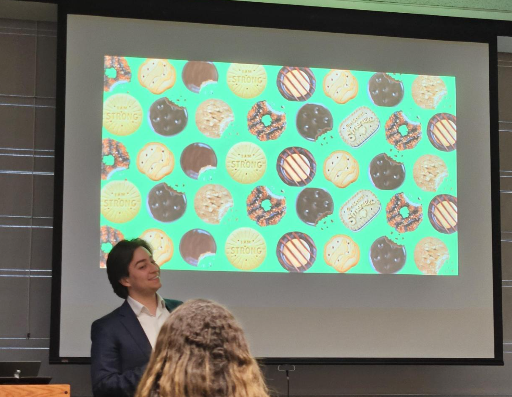
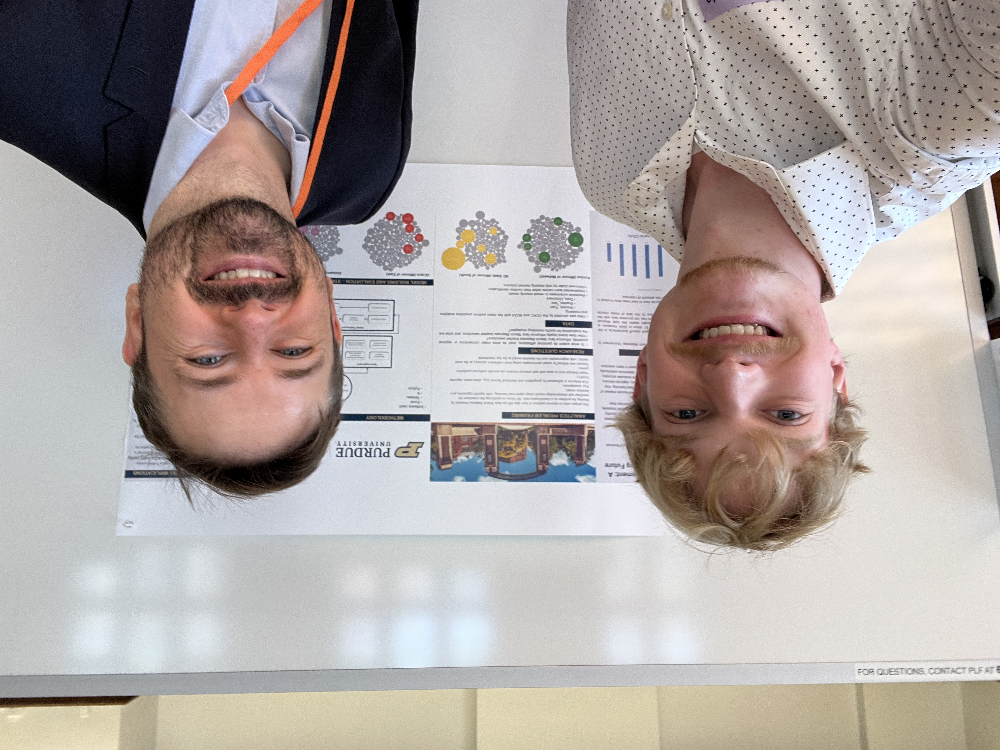
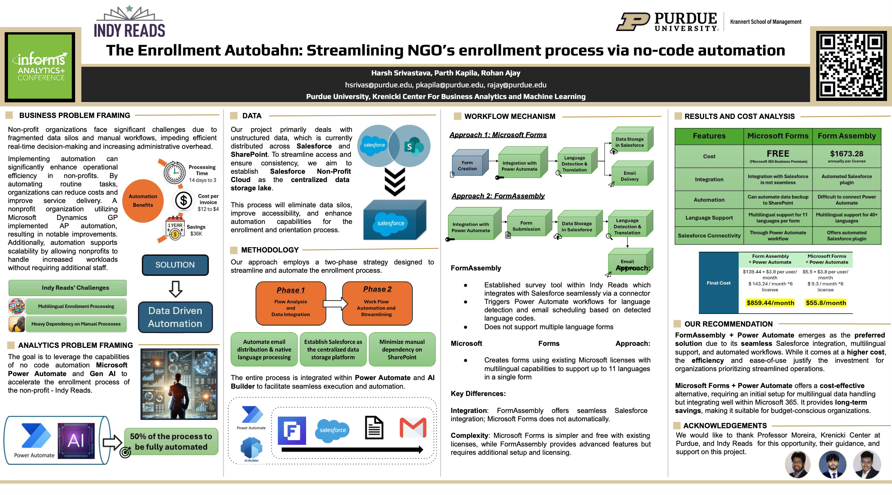
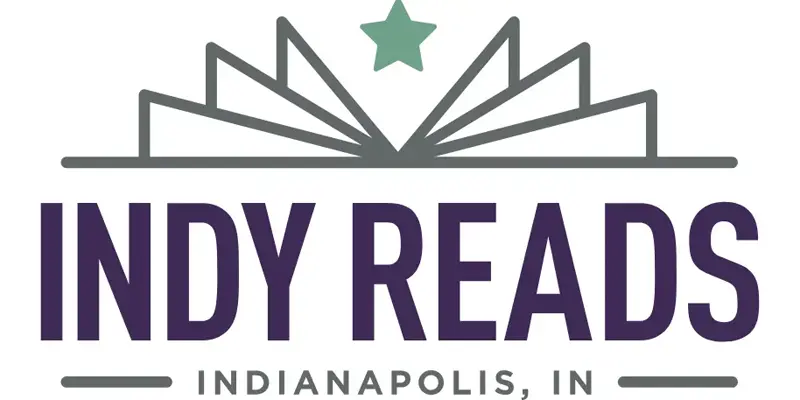

Experiential Learning
Hands‑on, data‑driven, student‑centered.
Below you will find the projects I have mentored—whether inside my courses, through the Krenicki Center for Business Analytics & Machine Learning at Purdue University, or at academic conferences—together with any awards the work has received.
2025
2025 Summer Undergraduate Research Symposium
2025 Spring Undergraduate Research Conference
I mentored 28 student projects that were presented either as Posters or Research Talks. Below, you will find the projects that were awarded in this conference, followed by a complete list of all the projects. You may access the abstracts for each project here.
Second Place Research Talk Award 2025 – Daniels School of Business
[]
Smart Cookies: A Predictive Approach to Girl Scout Cookie Sales by Gabriel Morales Nunez, Rishita Korapati, collaboration with Ramya Chowdary PolineniFirst Place Poster Award 2025 - Daniels School of Business
[]
Predicting Fan Engagement: A Similarity Test Enhancing Future Bracketology by Lynden Tate Oliver
All Projects Presented in the Conference
| # | Project Title | Authors | Type |
|---|---|---|---|
| 1 | Smart Cookies: A Predictive Approach to Girl Scout Cookie Sales | Gabriel Morales Nunez†; Rishita Korapati† | Research Talk |
| 2 | Predicting Fan Engagement: A Similarity Test Enhancing Future Bracketology | Lynden Tate Oliver†; Aubrey Zak‡; James Graeme Tolland‡; Charles Andrew Dempewolf‡; Maanav Narasimha Kyabarsi‡ | Poster |
| 3 | Predicting the Future of Electric Vehicles: Adoption Trends, Reliability, and Market Growth in Washington State | Maoxiong Chen†; Abhinav Bondlela†; Dane Alexander Kniola†; Theodore Dean Schmidt† | Poster |
| 4 | Bracket Bias: Predicting NCAA March Madness Outcomes and the Influence of Fan Loyalty | Kyle Steven Emgenbroich†; Kaitlin Rose Otto†; Ishita Tripathy†; Vaibhavi Chamiraju† | Poster |
| 5 | Forecasting Nike’s 2025 Earnings: A Data‑Driven Approach | Aditya Ghorpade†; Shreem Bhavesh Amin†; Ronak Bhagia†; Gabriel E. Calleja Sanchez†; Jayanth Madhava Kurup† | Poster |
| 6 | Predicting GDP Growth: Using Data‑Driven Insights to Uncover Economic Trends | Anisa Krvavac†; Adam Taesoo Bae†; Ian Spencer Lutz†; Jacob Matthew Embleton†; Alex Lukowiecki Caridi† | Poster |
| 7 | Forecasting Monthly Bag Distribution: Improving Delivery Efficiency Through Data | Josiah John Linnemann† | Poster |
| 8 | Analyzing Fan Predictions of Basketball Bracket Winners: Driven by Fan Brackets and Affinity of Teams | Adlyn Aliette Hernandez† | Poster |
| 9 | Optimizing Enrollment Processes: Leveraging Automation for Operational Efficiency and Multilingual Support | Parth Kapila† | Poster |
| 10 | Predicting Peoples’ Perfect Bracket: A Data‑Driven Approach to March Madness Forecasting | Lauren Mackenzie Knowlton† | Poster |
| 11 | Predicting Bracket Outcomes: Using Predictive Analytics to Understand How Customer School Affinity Affects Decision‑Making Bias | William V. Mehra†; Thomas Daniel Holland†; Nathan Andrew Summers†; Ethan Arthur Haeberle†; Mahek Gupta† | Poster |
| 12 | Predicting March Madness Bracket: The Influence of School Affinity | Viet Vu Hoang Ngo†; Rachel Kalyn Spear‡; Anishka Pateriya‡; Marcus Victor Page‡; Sana M. Khambati‡ | Poster |
| 13 | Predicting Consumer Purchasing Trends: A Comparative Analysis of Walmart and Target Customers in West Lafayette | Alexander Chase Alfele†; Lauryn J. Crumbley†; Annika Anders Nelson†; Brendan Lawrence Ludwig† | Poster |
| 14 | Predicting NCAA Bracket Champions with Data‑Driven Insights | Maura K. Flood†; Mackenzie Elizabeth Arnish†; Nicholas Patrick Zebell†; Haley Grace Henson†; Olivia Francis Hojnicki† | Poster |
| 15 | Beyond the Bracket: Data‑Driven Predictions of March Madness Selection Patterns | Alyssa A. Forester†; Sophia Ling‡; Isabella Chiara Lagioia‡; Zainab Waheed‡; Aadi Agrawal‡ | Poster |
| 16 | Predicting NCAA March Madness Outcomes: Assessing School Affinity and Bracket Forecasting Accuracy | Aryaa Madan†; Rayan Siddiqi†; Pahal Vishalkumar Kapatel†; Jacob Michael Zawacki† | Poster |
| 17 | Predicting March Madness Bracket Accuracy: The Role of School Affinity in Final Round Forecasting | Avi Manik†; Ark Kedia†; Somansh Hamen Shah†; Anurag Koripalli‡; Brady Ivan Yoder‡ | Poster |
| 18 | Predicting Electric Vehicle Sales: A Model‑Based Approach to Forecast Purchase Trends | Ricardo Andres Pena Rojas†; Brandon James Rodarmel†; Colin Lucas Wellington†; Alec Michael Walter‡ | Poster |
| 19 | Clicks to Conversions: Leveraging Social‑Media Engagement for Teenage Purchasing Behavior | Pranshu Aryal†; Ria Trikha Singh†; Tishia Talia Darmawan† | Poster |
| 20 | Predicting March Madness Fan Brackets: Leveraging Data for Sponsorship Insights | Michael Lance Whitfield†; Filippa Maria Rodriguez Pinzon†; Chalen Alexander Jack†; Varsha Raj†; Albert Joseph Burton‡ | Poster |
| 21 | Predictive Modeling of Liver Cancer Risk | Ethan Thomas Garcia†; Jakub John Jasinski†; Cooper J. Keillor†; Shenghua Wu†; Meenakshi Radhakrishnan† | Poster |
| 22 | Predicting March Madness Finalists: A Data‑Driven Approach to Understanding School Affinity | Drew Christophe Lawler†; Omar Haytham Al Husseini†; Kelly Ann Igo†; Benjamin James Wright‡ | Poster |
| 23 | Predicting Customer Ratings: A Data‑Driven Approach to Optimizing EV Charging Stations | Yun Jing Lin†; Cooper Jacob Wylie†; Theodore Christian Lewis†; Harleen Kaur Sohal†; Rick Lee† | Poster |
| 24 | Predicting NCAA Bracket Participation: Analyzing Fan Engagement Through Data | Chi Lin†; Brianna Annie Yu†; Shuhan Yang†; Kexin Han†; Joan Zhi Wei Lu† | Poster |
| 25 | Unveiling Fan Decision‑Making: Predicting Sports Championship Outcomes Through User Prediction Strategies | Samyukta Rajaraman†; Kriti Bagchi†; Brandon Michael Dries†; Alexander Logan Kapala†; Christina Wan† | Poster |
| 26 | Customer Return Likelihood: Based on Demographics, Service Usage, and Customer Support Interactions | Charlotte Ann Warren†; Lahari Krishna Bikkavilli†; Aksheet Sameer Paralkar†; Madeeha Sadiq† | Poster |
| 27 | Predicting Cryptocurrency Price Movements: A Data‑Driven Analysis of Trading Volume Trends | Tyler Nathan Wichman†; Hunter McCormick Danton†; Robert Paul Bogdajewicz†; Sruthi Bhamidipati†; Shreya Maganti† | Poster |
| 28 | Maximizing Revenue: Analyzing Hotel Rates and Booking Patterns | Xinyue Zhao†; Jackson McKinney†; Brody Lee Stevens†; Shih‑En Wang‡ | Poster |
† Presenting Undergraduate Author, ‡ Contributing Undergraduate Author, * Undergraduate Acknowledgment.
2025 INFORMS Analytics+ Conference
I mentored 2 student projects through the Krenicki Center for Business Analytics & Machine Learning at Purdue University the that were presented as Posters in the 2025 INFORMS Analytics+ Conference. Both teams combine undergraduate and graduate students from Purdue University. To check these projects details, check the next section.
The Enrollment Autobahn: Streamlining NGO’s enrollment process via no-code automation

Project team: Rohan Ajay, Parth Kapila and Harsh Srivastava.Krenicki Center for Business Analytics & Machine Learning at Purdue University
Girl Scouts Project
This initiative enhances cookie sales forecasting for the Girl Scouts of Central Indiana by advancing their predictive methods beyond the current naive approach, which relies solely on prior-year data and explains about 70% of sales variability. By utilizing advanced time series forecasting techniques applied to comprehensive data from 1,000 troops collected over five years, I mentored the student to develop a more complex predictive model and incorporate critical factors such as troop participation rates, regional market dynamics, and seasonal fluctuations. This refined approach yields superior predictive accuracy exceeding 80%, significantly improving inventory management by reducing surplus and optimizing sales opportunities. The resulting analytical framework not only improves immediate decision-making and fundraising effectiveness but also provides a foundation for future organizational advancements in forecasting and resource allocation.
Indy Reads Project

Project team: Rohan Ajay, Parth Kapila and Harsh Srivastava.In this project, I mentored students that collaborated with Indy Reads to enhance the organization’s enrollment process by identifying inefficiencies and integrating current data sources. The project aimed to reduce manual data entry and create a more streamlined experience for applicants, staff, and volunteers. By reviewing the existing process—spanning Form Assembly, Salesforce, SharePoint, Calendly, and InTERS—the team ensured seamless data flow across all systems. Implementing simple automations, the students improved operational efficiency, boosted responsiveness for applicants, and significantly lowered staff workload.
2022
Verbo ao Voto

Product of UFPE’s Computational & Experimental Political Science Lab (@cpcex_lab), portraying the 2022 Brazilian presidential race. Built in collaboration with Mônica Rocabado and Antonio Pires.
reeLegis
STM‑based analysis of 30k legislative proposals (2019‑2022). Developed in collaboration with Renata Cavalcanti and Bhreno Vieira.
2013
Retórica Parlamentar

Web app produced during the first Hackathon Câmara dos Deputados (2013). I engineered the web crawler and topic‑model pipeline that analysed 14k speeches from over 400 deputies (2011‑2013), surfacing 70 rhetorical themes. A team of undergraduate students at Federal University of Pernambuco worked with me to relaunch the project in 2022.